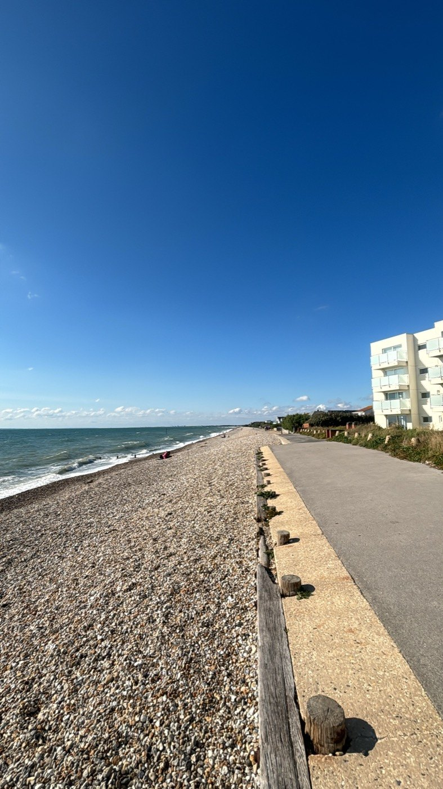
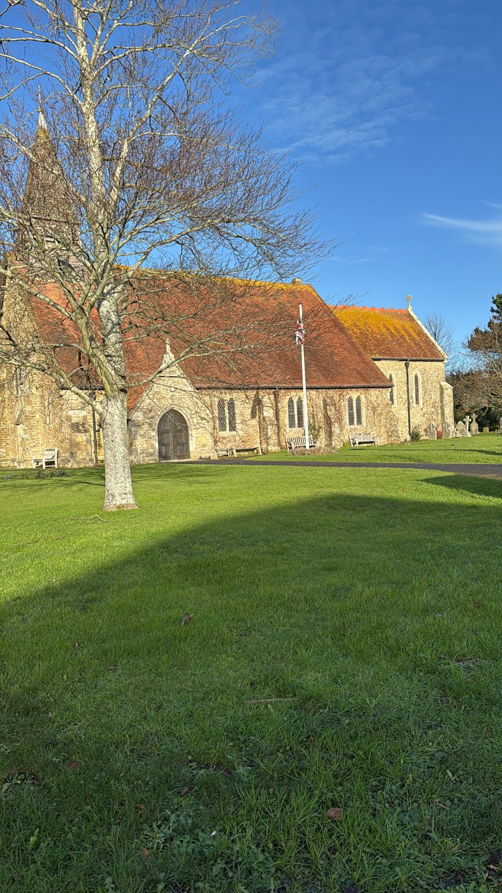
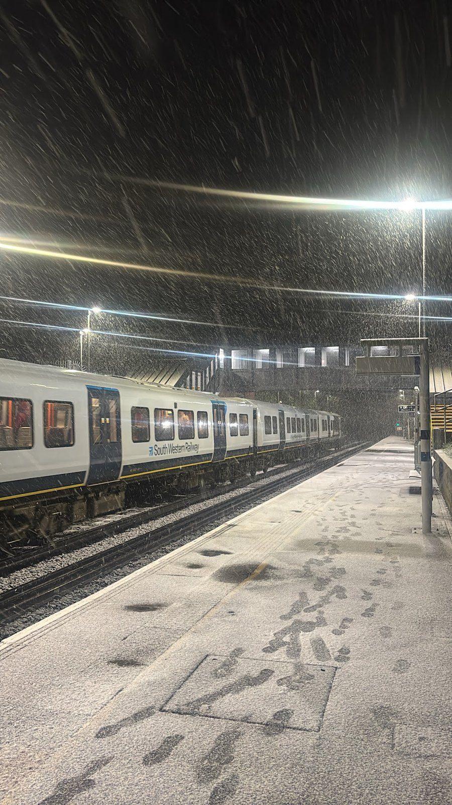

ANTES DE EMBARCAR
Chegada
Preparada
Planeje sua viagem ou mudança com orientações práticas e o inglês que você vai precisar usar desde o começo.
Conhecer o produto ↗INGLÊS, CULTURA & VIDA REAL
Aprenda o inglês que se fala por lá, descubra a cultura britânica e prepare-se para viver sua própria história na Inglaterra.
Uma experiência de verdade.
Inspirada em quase 16 anos de vivência na Inglaterra.

YOUR JOURNEY STARTS HERE
Cada história começa de um jeito. Escolha o caminho que faz sentido para o seu momento.
ANTES DE EMBARCAR
Planeje sua viagem ou mudança com orientações práticas e o inglês que você vai precisar usar desde o começo.
Conhecer o produto ↗PARA CONVERSAR DE VERDADE
Desenvolva sua conversação, pronúncia e confiança com situações reais e um mergulho na cultura britânica.
Conhecer o produto ↗PARA COMEÇAR UMA NOVA VIDA
Tenha acompanhamento próximo, em português, para organizar sua chegada e construir sua rotina com mais segurança.
Conhecer o acompanhamento ↗LET'S TALK, SHALL WE?
Imagine pedir um café, conversar com alguém no mercado ou entender uma resposta rápida no ônibus. Aqui, o inglês ganha contexto, sotaque e significado.
“Could I have…?” é uma forma educada de fazer um pedido.

PRIMEIROS 30 DIAS
Mudar de país é empolgante, mas também pode trazer dúvidas e momentos de solidão. Nos seus primeiros 30 dias, você terá alguém para conversar, organizar os próximos passos e encontrar caminhos para sua nova rotina.
Valor de lançamento R$ 700
Conhecer o acompanhamentoA HISTÓRIA POR TRÁS DA MARCA
Sou Breno, brasileiro, e vivi quase 16 anos em contato com a Inglaterra, sua língua e seu cotidiano. Entre cidades, conversas e descobertas, aprendi que conhecer um lugar vai muito além dos pontos turísticos.
O You Living in UK nasceu para compartilhar essa experiência: o inglês que se ouve na rua, os costumes que fazem parte do dia a dia e o apoio que eu gostaria de oferecer a quem está começando sua própria jornada.
Explore esse universo ↗ PEQUENOS MOMENTOS, GRANDES HISTÓRIAS
PEQUENOS MOMENTOS, GRANDES HISTÓRIASA LITTLE BIT OF BRITAIN
Entre palavras, lugares e hábitos, descubra pequenos detalhes que aproximam você da vida por lá.

VOCÊ SABIA? · INGLÊS
Em conversas informais, a expressão pode ser usada como um “tudo bem?”. A resposta pode ser simples: “Yeah, you alright?”

VOCÊ SABIA? · PASSEIO
O litoral inglês oferece caminhadas à beira-mar e cidades costeiras para explorar além dos passeios por Londres.
IDEIAS PARA EXPLORAR
Rodas-gigantes e feiras podem transformar uma noite em uma lembrança especial. Confira a programação e os ingressos antes da visita.
Na Inglaterra, chips são batatas fritas; o salgadinho de pacote é chamado de crisps.
Uma frase simples para praticar enquanto você conhece um pouco mais da cultura do chá.
O tempo pode mudar durante o dia: levar uma camada extra é uma ideia para passeios ao ar livre.
UM POUCO DE BRITISH KNOW-HOW
Escolha uma resposta e conheça um pouquinho mais do inglês e dos costumes que fazem parte do dia a dia.
POR ENTRE LUGARES E HISTÓRIAS
Cada fotografia guarda um pedaço da Inglaterra que conheci — das viagens aos pequenos momentos do dia a dia.


YOUR STORY STARTS HERE
Quer aprender inglês, preparar sua viagem ou entender como funciona o acompanhamento? Explore os caminhos e escolha o que combina com você.
Conhecer os caminhosCanais de contato e contratação serão adicionados em breve.